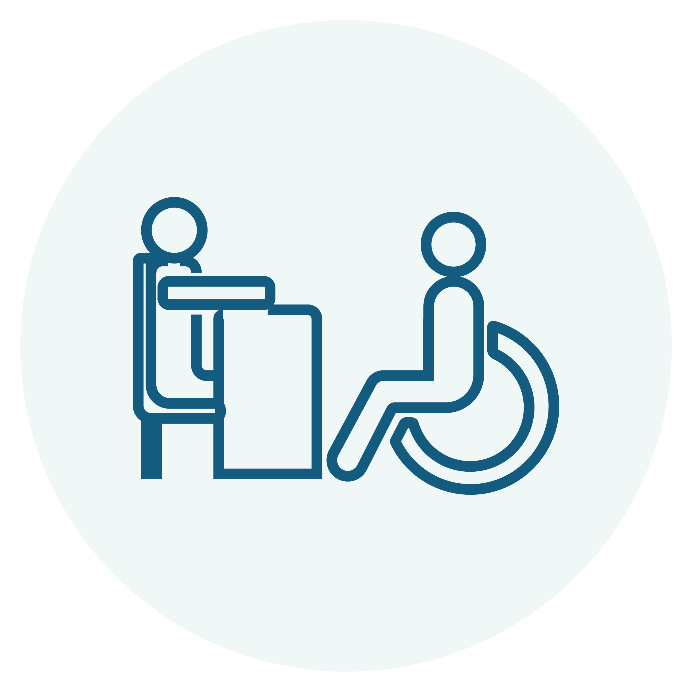
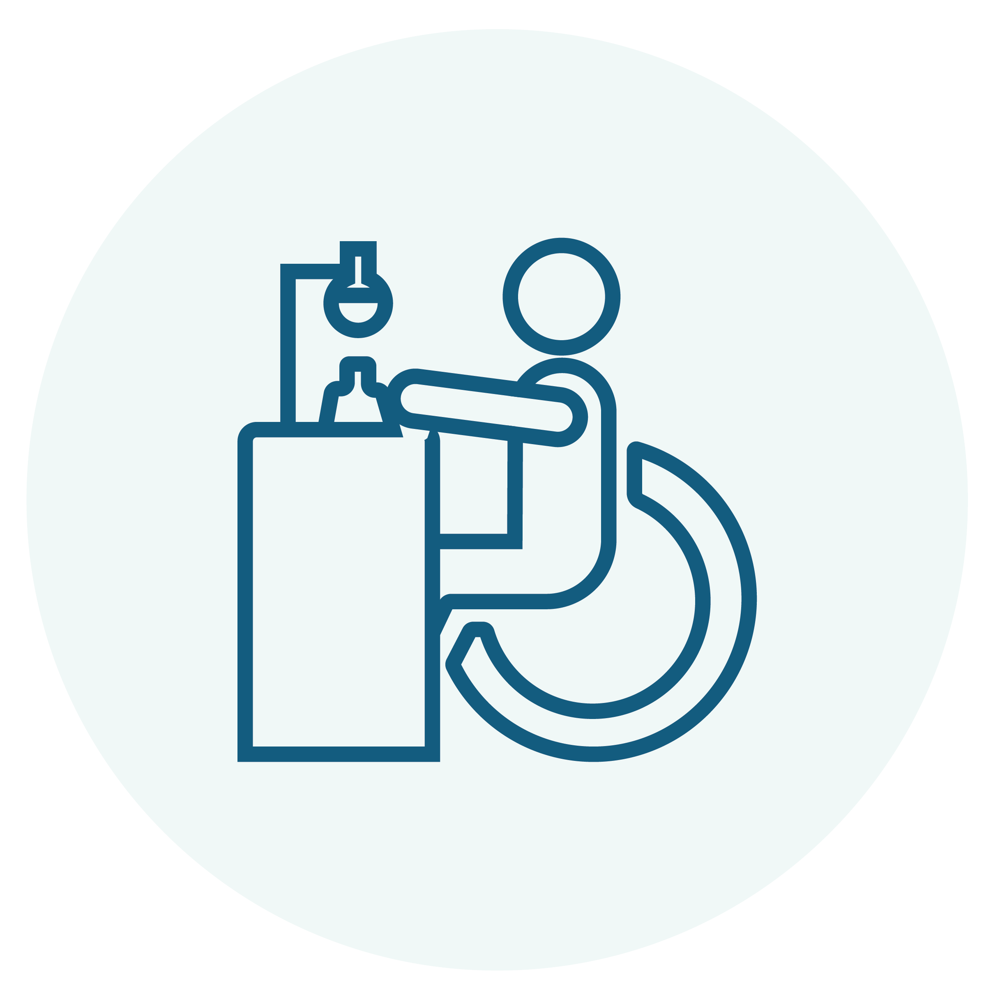
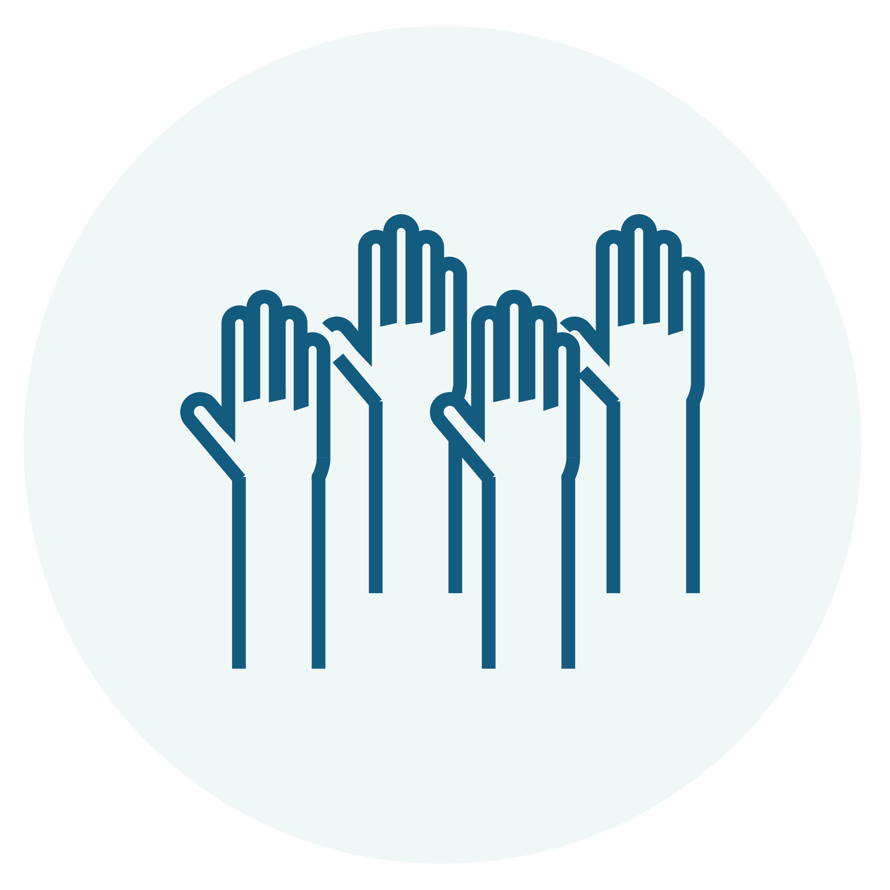
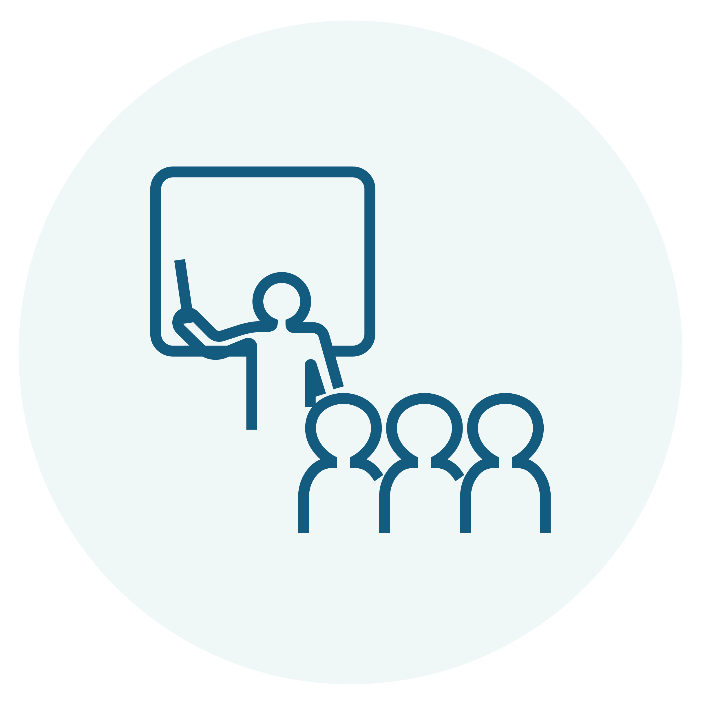

<section>
    <div class="flex">        
        <!-- Contenido principal -->
        <div class="w-4/5 pr-8">
            <!-- <div class="rounded-3xl overflow-hidden">  
                <iframe 
                    src="https://youtu.be/9iQ3-ipCIBI?si=AXchkuxfRI26NPAB?autoplay=1&mute=1" 
                    width=100% 
                    height= 315 
                    frameborder="0" 
                    allow="autoplay; encrypted-media" 
                    allowfullscreen>
                </iframe>
            </div> -->

            <h2 class="mt-0 text-xl md:text-2xl">¿Qué es?</h2>
            <p class="text text-base md:text-lg"> La Comisión de Equiparación de Oportunidades es el órgano oficial del Instituto Tecnológico de Costa Rica que se encarga de promover y garantizar la inclusión y la igualdad de oportunidades para las personas con discapacidad en la institución. </p>
            
            <h2 class="text-xl md:text-2xl">Funcionalidades</h2>
            <ul class="mt-2 list-disc list-outside pl-4 text-base md:text-lg">
                <li>Velar por el cumplimiento de lo estipulado en la Ley de Igualdad de Oportunidades para las Personas con Discapacidad, Ley No. 7600 y su reglamento. Ingrese al siguiente enlace si desea saber 
                    <a [routerLink]="['/leyes']" [routerLinkActive]="['active']" class="text-enlace" aria-label="Enlace que le redirige a la sección de normas"> más información sobre leyes.</a>
                </li>
                <li>Promover en la Comunidad Institucional el desarrollo de mayores niveles de sensibilización y concientización sobre los Derechos Humanos y la Discapacidad.</li>
            </ul>
            
            <h2 class="text-xl md:text-2xl">Servicios</h2>
            <ul class="mt-2 ml-20 mr-20">
                <li class="mt-0 li-servicio">
                    
                    <p class="text-servicio text-base md:text-lg">Acompañamiento y asesoría psicoeducativa individual y grupal para estudiantes con necesidades educativas y en condición de discapacidad.</p>
                </li>
                <li class="li-servicio">
                    
                    <p class="text-servicio text-base md:text-lg" >Gestión de ajustes y apoyos educativos para el aprendizaje según las necesidades de cada estudiante.</p>
                </li>
                <li class="li-servicio">
                    
                    <p class="text-servicio text-base md:text-lg">Gestión de acciones y articulación con otras instancias y programas que permitan la revisión, definición y actualización de acciones para el cumplimiento de los derechos de la población estudiantil con necesidades educativas y en condición de discapacidad.</p>
                </li>
                <li class="li-servicio">
                    
                    <p class="text-servicio text-base md:text-lg">Asesoría en el tema de apoyos educativos, discapacidad y necesidades educativas a docentes, estudiantes u otras instancias que lo requieran.</p>
                </li>
            </ul>
            
            <h2 class="text-xl md:text-2xl">Integrantes</h2>
            <p class="mt-2 text-base md:text-lg">La siguiente tabla contiene los datos de los integrantes de la comisión:</p>
            <div class="mt-2 table-styled text-base md:text-lg">
                <table >
                    <thead>
                        <tr>
                            <th>Nombre</th>
                            <th>Sede</th>
                            <th>Correo electrónico</th>
                            <th>Teléfono</th>
                        </tr>
                    </thead>
                    <tbody>
                        
                        <tr>
                            <td>Paula Cubillo Segura</td>
                            <td>Cartago</td>
                            <td><a href="mailto:pcubillo&#64;tec.ac.cr">pcubillo&#64;tec.ac.cr</a></td>
                            <td>2550 2784</td>
                        </tr>
                    </tbody>
                </table>
            </div>


        </div>

        <!-- Sección de Noticias -->
        <div class="w-1/5">
            <div class="bg-tec-title rounded-full">
                <a href="https://www.tec.ac.cr/hoyeneltec/" target="_blank"
                    aria-label="Enlace a página Hoy en el TEC (se abre en una pestaña nueva)">
                    <h2 class="mt-0 text-base md:text-xl h2-noticia">Noticias</h2>
                </a>
            </div>

            <div class="div-noticia">
                
                <div class="p-3">
                    <span class="span-date text-tec-title text-sm md:text-base">27 de Noviembre 2023</span>
                    <a href="https://www.tec.ac.cr/hoyeneltec/2023/11/27/siempre-van-existir-posibilidades-no-hay-limites" target="_blank"
                        aria-label="Enlace a noticia 'Siempre van a existir las posibilidades y no hay límites' (se abre en una pestaña nueva)">
                        <h3 class="text-sm md:text-base">“Siempre van a existir las posibilidades y no hay límites"</h3>
                    </a>
                </div>
            </div>

            <div class="div-noticia">
                
                <div class="p-3">
                    <span class="span-date text-tec-title text-sm md:text-base">02 de Noviembre 2022</span>
                    <a href="https://www.tec.ac.cr/hoyeneltec/2022/11/02/expertos-internacionales-accesibilidad-inclusion-se-reunieron-costa-rica" target="_blank" class="block" 
                        aria-label="Enlace a noticia 'Expertos internacionales en accesibilidad e inclusión se reunieron en Costa Rica' (se abre en una pestaña nueva)">
                        <h3 class="text-sm md:text-base">Expertos internacionales en accesibilidad e inclusión se reunieron en Costa Rica</h3>
                    </a>    
                </div>
            </div>
            
            <div class="div-noticia">
                
                <div class="p-3">
                    <span class="span-date text-tec-title text-sm md:text-base">20 de Julio 2022</span>
                    <a href="https://www.tec.ac.cr/hoyeneltec/2022/07/20/tec-atiende-permanentemente-necesidades-educativas-especificas-personas-discapacidad" target="_blank" class="block" 
                        aria-label="Enlace a noticia 'El TEC atiende permanentemente las necesidades educativas específicas de las personas con discapacidad' (se abre en una pestaña nueva)">
                        <h3 class="text-sm md:text-base">El TEC atiende permanentemente las necesidades educativas específicas de las personas con discapacidad</h3>
                    </a>
                </div>
            </div>

        </div>
    </div>
</section>